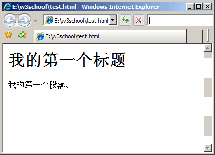

HTML编辑器
使用Notepad或TextEdit来编写HTML
可以使用专业的 HTML 编辑器来编辑 HTML：
- Adobe Dreamweaver
- Microsoft Expression Web
- CoffeeCup HTML Editor
不过，我们同时推荐使用文本编辑器来学习 HTML，比如 Notepad (PC) 或 TextEdit (Mac)。我们相信，使用一款简单的文本编辑器是学习 HTML 的好方法。 通过记事本，依照以下四步来创建您的第一张网页。
步骤一：启动记事本
如何启动记事本：
开始
所有程序
附件
记事本
步骤二：用记事本来编辑HTMl
在记事本中键入HTML代码：

步骤三：保存HTML
在记事本的文件菜单选择“另存为”。
当您保存 HTML 文件时，既可以使用 .htm 也可以使用 .html 扩展名。两者没有区别，完全根据您的喜好。
在一个容易记忆的文件夹中保存这个文件，比如 w3school。
步骤四：在浏览器中运行这个HTML文件
启动您的浏览器，然后选择“文件”菜单的“打开文件”命令，或者直接在文件夹中双击您的 HTML 文件。
结果应该类似这样：
工具箱